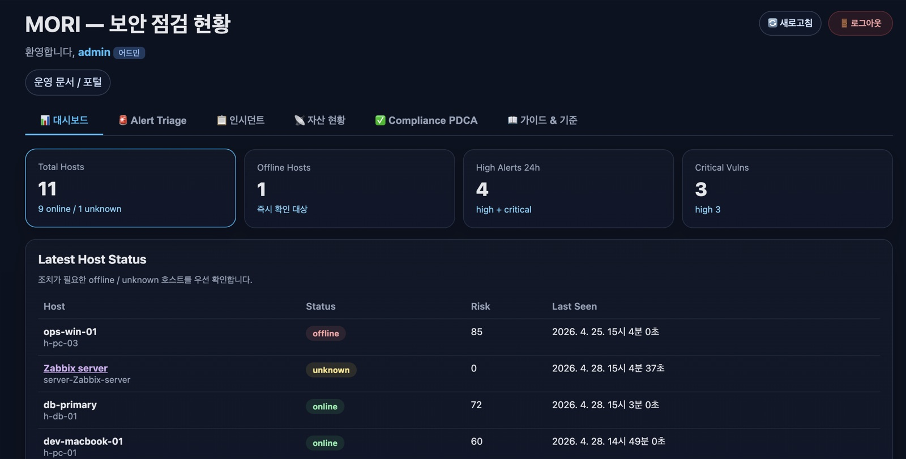
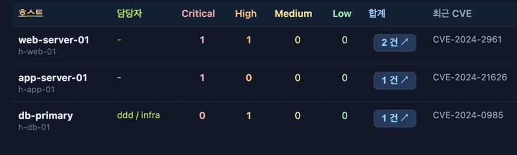
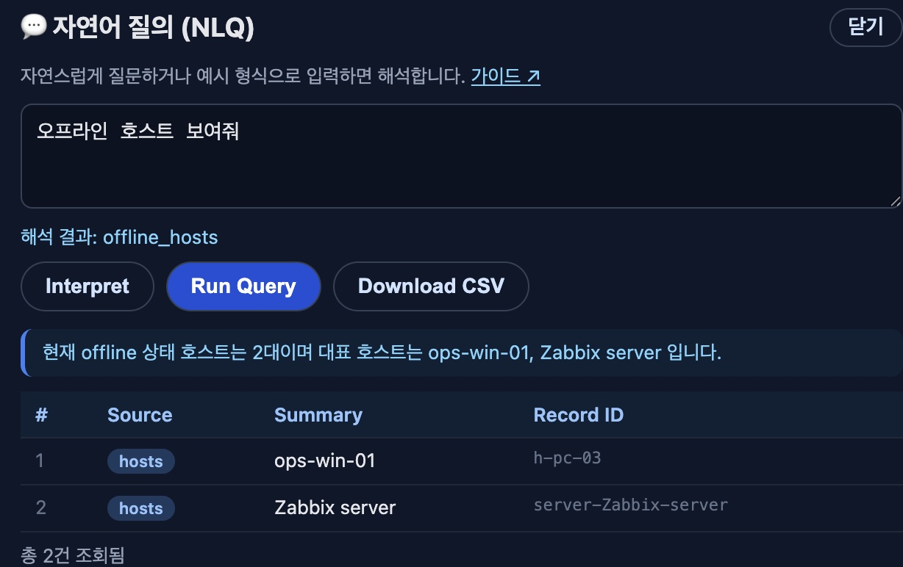

보안을 잘하는 것보다
증명하는 일을 자동으로.Stop assembling evidence.
Let it accumulate.
MORI SOC 는 이미 쓰고 있는 Zabbix · Fleet · Wazuh · Trivy · Loki 위에 읽기 전용으로 얹혀, 운영 데이터를 ISMS-P · ISO 27001 심사에 그대로 낼 수 있는 증적으로 바꿉니다. 모든 변경은 누가 · 언제 · 무엇을 · 어떤 근거로 했는지 자동으로 남습니다.MORI SOC sits read-only on top of the Zabbix · Fleet · Wazuh · Trivy · Loki you already run, and turns operational data into evidence you can hand to ISMS-P and ISO 27001 auditors. Every change records who · when · what · on what basis.
왜 MORI 인가Why MORI
보안을 안 하는 게 아니라, 증명이 어려운 겁니다It's not that you don't do security — proving it is the hard part
심사관은 묻습니다. "이 경보 왜 닫았어요? 누가 승인했어요? 작년이랑 뭐가 바뀌었어요?" 이걸 보안 담당 1~2명이 엑셀과 캡처로 매년 다시 정리합니다. MORI 는 그 일을 운영 도구의 데이터에서 자동으로 쌓습니다.Auditors ask: "Why was this alert closed? Who approved it? What changed since last year?" One or two security staff rebuild the answers from spreadsheets and screenshots every year. MORI accumulates them automatically from your operational tools.
| MORI 없이Without MORI | MORI 있으면With MORI | |
|---|---|---|
| 증적 모으기Collecting evidence | 엑셀 · 스크린샷 수작업Manual spreadsheets · screenshots | 도구 데이터에서 자동 누적Accumulated automatically from tool data |
| 경보 종결 근거Why an alert was closed | 기억 · 메신저에 흩어짐Scattered across memory and chat | 누가 · 언제 · 왜를 클릭 한 번에 기록Who · when · why recorded in one click |
| 개인정보 흐름도Personal-data flow | 매년 손으로 다시 그림Redrawn by hand every year | 코드 스캔으로 자동 초안 + 감사관용 PDFAuto draft + auditor PDF from code scans |
| 감사 제출Audit submission | 폴더를 뒤져 짜깁기Stitched together from folders | 통제별 증적 PDF · CSV · ZIP 한 번에Per-control PDF · CSV · ZIP in one go |
구조Structure
보는 층이 아니라, 증적 층Not a viewing layer — an evidence layer
시계열 · 로그 시각화는 Grafana / Loki 에 맡기고, MORI 는 그 위에서 판단 · 기록 · 증명을 담당합니다. 기존 도구를 대체하지 않습니다.Time-series and log visualization stay with Grafana / Loki. MORI handles judgement · records · proof on top — it replaces none of your tools.
코어 — 통제 · 판단 · 증적Core — controls · judgement · evidence
통제 거버넌스, 증적 신뢰 · 승인 · 신선도, Gap 워크플로, 감사 패키지. 이것이 제품입니다.Control governance, evidence trust · approval · freshness, gap workflow, audit packages. This is the product.
증적 소스 — 플러그인Evidence sources — plugins
Zabbix · Fleet · Trivy · Wazuh · 코드 리뷰가 구조화된 신호를 넣어 줍니다. MORI 는 코드를 가져오지 않습니다.Zabbix · Fleet · Trivy · Wazuh · code review feed structured signals. MORI never pulls your code.
버티컬 — 확장 모듈Verticals — extension modules
개인정보(3.x) · 계정 거버넌스 · 취약점 조치. 코어에 꽂히는 모듈입니다.Personal data (3.x) · account governance · vulnerability remediation, plugged into the core.
숫자는 정직하게Honest numbers
부풀리지 않는 커버리지Coverage that isn't inflated
감사 신뢰성이 핵심이라 숫자를 정직하게 둡니다. 초안 통제는 UI 에 draft 라벨로 표시되고, 커버리지는 검토완료이면서 증적이 연결된 통제만 셉니다.Audit trust depends on honest numbers. Draft controls carry a draft label in the UI, and coverage counts only reviewed controls with linked evidence.
화면Screens
한 화면에서 운영하고, 기록은 자동으로Operate in one place; records happen on their own
대시보드 · Alert Triage · 인시던트 · 자산/취약점 · Compliance PDCA 를 /ui 한 곳에서. 아래는 데모 데이터 화면입니다.Dashboard · alert triage · incidents · assets/vulnerabilities · compliance PDCA in one place at /ui. Screens below use demo data.

통합 대시보드 — 호스트 · 경보 · 취약점 KPI 와 조치가 필요한 호스트 우선 표시Unified dashboard — host · alert · vulnerability KPIs, hosts needing action first

취약점(Trivy) — 호스트별 심각도 집계와 최근 CVE. 누르면 조치 계획 · 예외까지 전체 화면을 볼 수 있습니다Vulnerabilities (Trivy) — severity counts and latest CVE per host. Click for the full screen with plans and exceptions

자연어 질의 — "오프라인 호스트 보여줘" → 인텐트 매칭 → 결과 · 요약 · CSVNatural-language query — "show offline hosts" → intent → results · summary · CSV
문서Documentation
구조부터 API 까지From structure to API
공개 저장소 saranf/mori-soc(0.6.0 alpha)를 기준으로 정리했습니다.Based on the public saranf/mori-soc repository (0.6.0 alpha).
아키텍처Architecture
증적 층의 위치, 서비스 구성, 데이터 흐름, 데이터 모델, 권한, 무결성 장치Where the evidence layer sits, services, data flow, data model, roles, integrity
읽기Read →핵심 기능Core features
통제 카탈로그 · 통제 운영, 증적 신뢰 층, 감사 실사용, 개인정보 · 코드 리뷰 · 계정 · 취약점Control catalog · governance, evidence trust, audit tooling, privacy · code review · accounts · vulnerabilities
읽기Read →연동 · 배포Integrations · deployment
커넥터와 검증 상태, 데모 · 브라운필드 시작, compose 프로필, 운영 · 백업Connectors and verification status, demo · brownfield start, compose profiles, ops · backup
읽기Read →API 레퍼런스API reference
분류별 212개 엔드포인트, 증적 인제스트, 인증 방식212 endpoints by group, evidence ingest, authentication
읽기Read →빠른 시작Quick start
명령 한 줄로 데모A demo in one command
스크립트가 .env 생성 → 기동 → 스키마 / 시드 → 워커까지 진행합니다. 브라우저에서 http://localhost:18000/ui 로 접속하세요.The script creates .env, starts the stack, loads schema / seed data and starts the worker. Open http://localhost:18000/ui.
admin / security / monitor (비밀번호 1234)는 격리된 데모 전용입니다. 운영 배포 전 체크리스트는 연동 · 배포 → 운영 전환을 보세요.admin / security / monitor (password 1234) are for the isolated demo only. See Integrations · deployment → Going to production before deploying.
$ git clone https://github.com/saranf/mori-soc.git $ cd mori-soc $ ./scripts/mori-start-demo.sh # → http://localhost:18000/ui
ISMS-P · ISO 27001 심사를 준비하고 계신가요?Preparing for ISMS-P or ISO 27001?
MORI 를 만든 RM Studio 가 도입과 연동을 함께합니다.RM Studio, the team behind MORI, can help you adopt and integrate it.